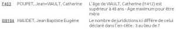
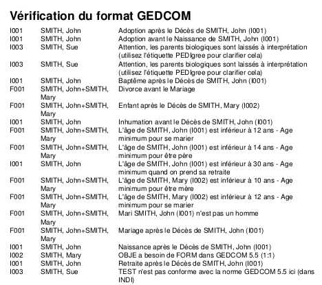

|  |
VIAULT, Catherine est née aux environs de 1497 et sa fille aux environs de 1547. Donc à la naissance de sa fille elle a environ 50 ans ce qui est trop par rapport aux 48ans des préférences. Tout va rentrer dans l'ordre quand les dates seront précisées. MAUDET, Jean Baptiste Eugène est né à ,chambretaut,85 3 juridictions sont renseignées sur les 7 du .ged |
|
Voici un florilège de comptes-rendus possibles lors d'une vérification du gedcom.  Autant d'incohérences avec 3 individus et 2 familles !! Manque d'attention au moment de la saisie ou volonté délibérée ? Ouf, toutes les erreurs détectées ont été corrigées |
|
|